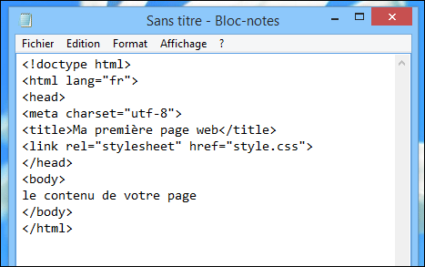
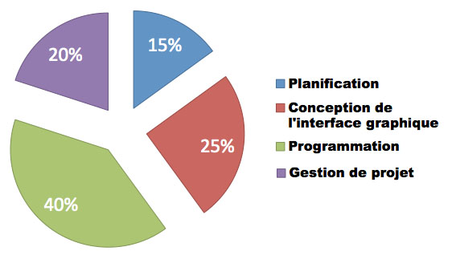

Venez découvrir mon tout premier site internet avec moi.
Nous allons découvrir qu'est-ce qu'un site internet.
Un site web, ou simplement site, est un ensemble de pages web et de ressources reliées par des hyperliens, défini et accessible par une adresse web. Un site est hébergé sur un serveur web accessible via le réseau mondial internet, un intranet local ou encore depuis le serveur web lui-même. L'ensemble des sites web constituent le World Wide Web.
Le World strongide Web (WWW) a été créé en 1989 par l’ingénieur anglais du CERN Tim Berners-Lee. Le web a été essentiellement conçu pour partager automatiquement des informations entre les scientifiques, universités et instituts du monde entier. info.cern.ch fut le premier site web mis en ligne, fonctionnant sur un ordinateur NeXT au CERN. Ce site est toujours accessible par internet1. Le premier site web français est créé en 1992 au CNRS2. A cette période, il existe seulement 26 sites web3.
Avant l’introduction de HTML et HTTP, d’autres protocoles tels que FTP et Gopher étaient utilisés pour obtenir des fichiers depuis un serveur. Ces protocoles offraient une organisation hiérarchique de répertoires dans lesquels l’utilisateur naviguait et choisissait les fichiers à télécharger. Les documents étaient principalement des fichiers texte sans mise en page et des fichiers encodés par un traitement de texte.
Un site est un ensemble de pages qui peuvent être consultées en suivant des hyperliens à l'intérieur du site. L'adresse web d'un site correspond en fait à l'URL d'une page web, prévue pour être la première consultée : la page d'accueil.
La consultation des pages d'un site s'appelle une « visite », car les hyperliens devraient permettre de consulter toutes les pages du site sans le quitter (sans devoir consulter une page web hors du site). Une visite peut commencer par n'importe quelle page, particulièrement lorsque son URL est donnée par un moteur de recherche. Techniquement, rien ne distingue la page d'accueil d'une autre page.

Source: Wikipédia
Un site est donc un ensemble de pages Web accessibles via Internet sur un serveur identifié par une adresse.
Nous allons voir plus d'informations sur la création d'un site web.
Selon vous,le prix d'une création d'un site web est de _____£
La réponse
La majorité des sites Web d’entreprises coûteront entre 1 500 € et 20 000 €.
Découpage du prix d’un site internet
Une technique simple pour découper le budget d’un site internet est la suivante :

Ces sites ont le mécanisme de fonctionnement le plus simple : les URL correspondent à un fichier renvoyé par le serveur web. Le contenu des pages d'un site statique ne dépend donc pas de variables telles que la date ou de bases de données. Pour changer le contenu d'une page, il est nécessaire de changer le contenu du fichier.
En outre, les visiteurs peuvent seulement voir le contenu du site mais pas y participer. Pour les réaliser, seuls les langages dits d'interface utilisateur (frontend) sont nécessaires, c'est-à-dire HTML, CSS et JavaScript (en théorie, il est toutefois possible d'utiliser uniquement le HTML).
Ces sites offrent un contenu qui peut évoluer dans le temps. Des programmes tournent du côté des serveurs, à l'arrière plan, (backend) pour générer les pages du site. Ces programmes peuvent se servir de bases de données ou autres sources de données pour composer les pages qui seront affichées dans le navigateur.
Ce dynamisme apporte des fonctionnalités que ne peuvent pas offrir les sites dits statiques. Par exemple les visiteurs peuvent y participer (commentaires sur un blog, changement du contenu des pages d'un wiki...). Ils ont donc pratiquement supplanté les sites statiques au début des années 2000.
Pour les réaliser, on a également besoin de HTML, de CSS et de JavaScript, mais les programmes qui tournent du côté serveur utilisent d'autres langages qui peuvent créer dynamiquement les pages, en analysant les requêtes des visiteurs pour ensuite fabriquer une réponse adaptée.
Il existe plusieurs langages pour créer ces pages : PHP, Java, C#, Ruby, voire d'autres comme C++, Python et Visual Basic via l'interface CGI.
Leur temps de chargement est généralement plus long que pour les pages statiques, toutefois il est possible d'obtenir des valeurs proches en stockant les pages dynamiques déjà appelées dans une mémoire cache, qui les réaffichera plus vite.
Source:Sergentweb
{kind=link}
{kind=link}